Руководство пользователя
1. Назначение системы
Система предназначена для моделирования работы автозаправочной станции. Пользователя имеет возможность создания топологии АЗС, сохранения и загрузки готового шаблона топологии АЗС, настройки параметров объектов и транспортного потока, возможность имитации работы АЗС и введения базы данных о видах автомобилей и типах топлива.
Начало2. Условия работы системы
Для корректной работы системы необходимо наличие соответствующих программных и аппаратных средств.
1) Требования к техническому обеспечению:
– процессор Intel Core i5 2.0 ГГц;
– оперативная память 2 Гб;
– свободное место на диске 500 Мб.
2) Требования к программному обеспечению:
– операционная система Windows 8 и выше;
– установленная платформа Node.js;
– Java 8;
– любой современный браузер.
Начало3. Установка системы
Система поставляется в виде zip-архива. Данный файл необходимо распаковать в любую директорию на жестком диске. Запускаемым файлом системы является файл ххх.exe.
Начало4. Работа с системой
После запуска системы открывается окно с основным меню программы (рисунок 1).
Пользователь может создать новую топологию в конструкторе топологии, загрузить топологию из БД, посмотреть информацию о разработчиках или сведения о системе, нажав на соответствующую кнопку.

Рисунок 1 – Главное окно
При загрузке существующей топологии откроется диалоговое окно для выбора файла топологии. После выбора нужного файла откроется окно конструктора с загруженной топологией (рисунок 2).
Рисунок 2 – Экранная форма конструирования топологии АЗС (топология загружена из БД)
При создании новой топологии отображается форма настройки параметров рабочей области АЗС (рисунок 3).
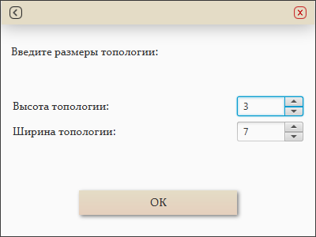
Рисунок 3 – Экранная форма настройки параметров рабочей области
После настройки параметров рабочей области отображается форма конструирования топологии АЗС, на которой отсутствуют какие-либо элементы (рисунок 4).
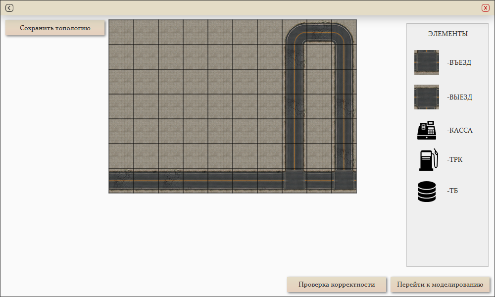
Рисунок 4 – Экранная форма конструирования топологии АЗС (ни один объект не был добавлен)
Далее необходимо выбрать из списка нужные для составления топологии элементы и разместить их в конструкторе, для этого нужно выбрать подходящий объект из списка и кликнуть на нужное место топологии АЗС (рисунок 5). Обязательно должны быть въезд, выезд, ТРК, ТБ и касса. Количество ТРК должно варьироваться от 1 до 4, ТБ – от 1 до 5.

Рисунок 5 – Экранная форма конструирования топологии АЗС (расположены некоторые элементы)
После расстановки всех объектов в конструкторе можно настроить параметры моделирования элементов топологии в соответствующем окне (рисунок 6). Необходимо настроить объём ТБ, он должен быть в пределах от 5000л до 20000л, задать критический уровень (от 10% до 90%) и выбрать типы топлива. Для ТРК нужно задать скорость заправки, которая должна быть в пределах от 60л/мин до 100л/мин. Для того чтобы настроить кассу, необходимо указать её лимит, который должен варьироваться от 10000 до 100000 рублей. Также необходимо задать вероятность заезда авто на АЗС.
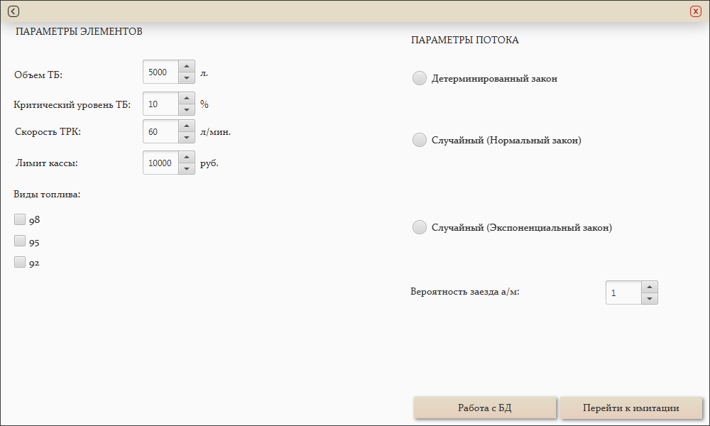
Рисунок 6 – Экранная форма моделирования
Далее приведены экранные формы окна моделирования в зависимости от выбранного вида распределения транспортного потока (рисунки 7-9). В зависимости от выбранного вида распределения изменяется содержимое окна, а именно: поля ввода параметров, используемых для генерации потока. Пользователь может выбирать вид распределения и ввести параметры для генерации потока: время появления (от 1с до 10с) автомобиля для детерминированного закона распределения, математическое ожидание (от 1с до 10с) и дисперсию (от 0с до 4,5с) для нормального закона распределения и интенсивность (от 1с до 4с) для экспоненциального закона распределения.
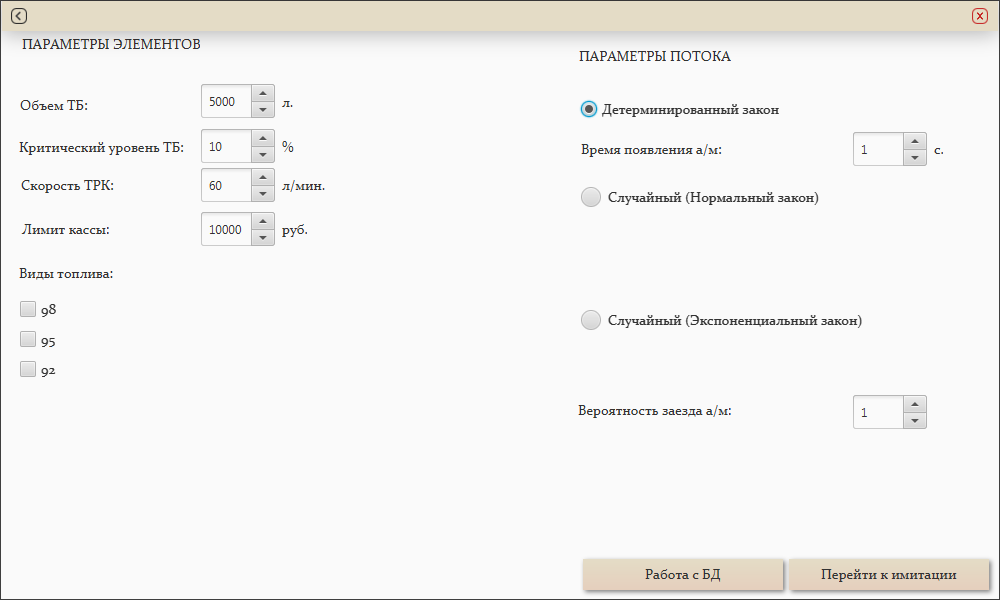
Рисунок 7 – Экранная форма настройки параметров моделирования работы АЗС (детерминированный поток)
Рисунок 8 – Экранная форма настройки параметров моделирования работы АЗС (случайный поток, нормальный ЗР)
Рисунок 9 – Экранная форма настройки параметров моделирования работы АЗС (случайный поток, экспоненциальный ЗР)
При нажатии на кнопку «Работа с БД» отображается форма для работы с БД (рисунок 10). Пользователь может добавлять или редактировать информацию об автомобилях, посещающих АЗС, и видах топлива, продающихся на АЗС.
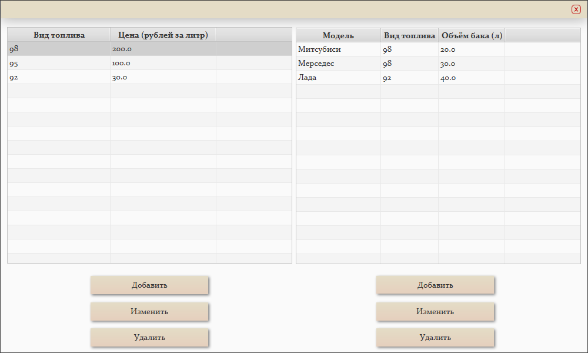
Рисунок 10 – Экранная форма работы с БД (просмотр списков топлива и автомобилей)
Пользователь может мышкой выбирать необходимую запись в соответствующей таблице для удаления или редактирования. После нажатия на кнопку «Изменить» отображается форма работы с БД, где можно редактировать запись в списке автомобилей или видов топлива (рисунки 11-12). После нажатия на кнопку «Добавить» отображается форма работы с БД, где можно добавить запись в списке автомобилей или видов топлива (рисунки 13-14).
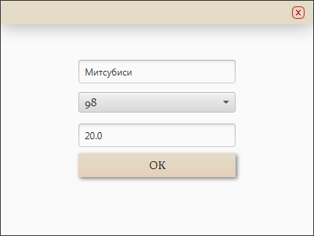
Рисунок 11 – Экранная форма работы с БД (редактирование информации об автомобиле)
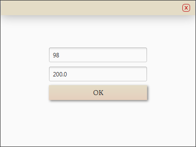
Рисунок 12 – Экранная форма работы с БД (редактирование информации о виде топлива)
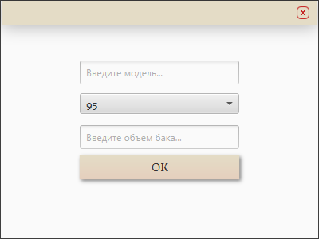
Рисунок 13 – Экранная форма работы с БД (добавление информации об автомобиле)
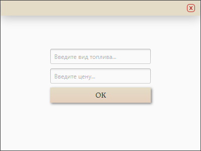
Рисунок 14 – Экранная форма работы с БД (добавление информации о виде топлива)
После настройки всех параметров, нажав на кнопку «Запуск моделирования», отобразится окно моделирования (рисунок 15). Пользователь может просмотреть лог событий, содержащий информацию о заправляющихся автомобилях, прибывших инкассаторах и дозаправщиках, а также табло статистики, содержащее общий заработок, количество заправленных автомобилей и общее количество литров израсходованного топлива за всё время работы АЗС. Ещё пользователь может увидеть информацию о выбранном объекте топологии, кликнув по нему. Также в этой форме можно приостановить, запустить или остановить моделирование и выбрать режим работы.
Рисунок 15 – Экранная форма имитации работы АЗС
5. Системные ошибки
5.1 Подсистема конструирования топологии
При расположении объектов АЗС в некорректных позициях будут выведены следующие сообщения (рисунок 16).
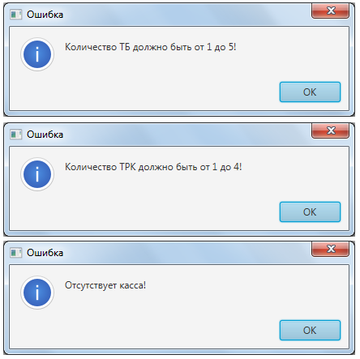
Рисунок 16 – Ошибки подсистемы конструирования топологии
5.2 Подсистема настройки параметров объектов
Если пользователь выберет число типов топлива неравное количеству ранее поставленных ТБ, система выдаст соответствующую ошибку (рисунок 17).
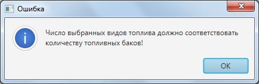
Рисунок 17 – Ошибка подсистемы настройки параметров объектов